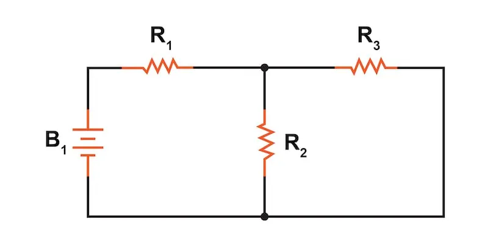
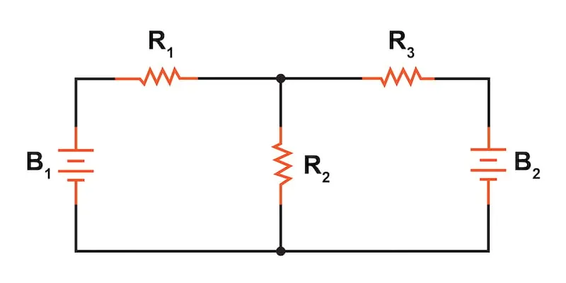
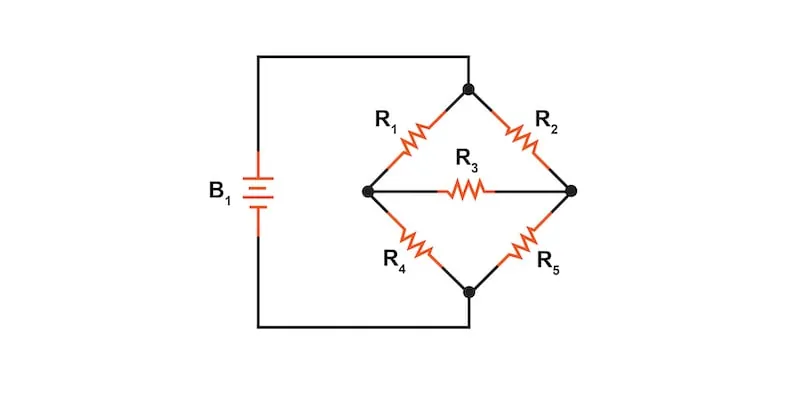

The basic application of Ohm’s law to combinations of series and parallel circuits can solve many network problems. However, this page will introduce examples of circuits with multiple power sources or unique component configurations that defy simplification by series and parallel analysis techniques. For these, we will need to rely on network analysis methods.
This page provides an overview of the network analysis methods that are explained in detail on other pages within this chapter.
To illustrate how even a simple circuit can defy analysis by breakdown into series and parallel portions, let’s start with the series-parallel circuit shown in Figure 1.

To analyze this circuit, one would first find the equivalent resistance of R2 and R3 in parallel, then add R1 in series to arrive at a total resistance.
$$R_{total} = R_1 + \frac{1}{\frac{1}{R_2}+\frac{1}{R_3}}$$
Then, the total current could be calculated by applying Ohm’s law (I = V/R) using the voltage of battery B1 with that total circuit resistance. Knowing that total current, we could calculate the voltage drop across R1 and then the voltages across resistors R2 and R3. With repeated application of our basic series and parallel circuit concepts, we could relatively easily determine all of the currents and voltage drops in this circuit.
As we previously noted, some circuits are more complex than our example in Figure 1 that cannot be solved using simple series-parallel analysis techniques. With that in mind, let's look at a few examples.
Adding just one more battery to the circuit of Figure 1, as shown in Figure 2, prevents us from using our basic circuit analysis methods.

Resistors R2 and R3 are no longer in parallel with each other because B2 has been inserted into the circuit in series with R3. Upon closer inspection, it appears there are no two resistors in this circuit directly in series or parallel with each other.
This is the main problem—in series-parallel analysis, we start off by identifying sets of resistors that are directly in series or parallel with each other and then reduce them to single equivalent resistances. If there are no resistors in a simple series or parallel configuration with each other, then what can we do? The solution will be to use network analysis techniques like the superposition theorem.
This is not the only type of circuit that defies series-parallel analysis. Let’s look at another.
Figure 3 is a bridge circuit. If it were balanced with R1 equal to R2 and R4 equal to R5, there would be zero current through R3, and it could be approached as a series-parallel circuit (R1—R4 // R2—R5).

For the sake of our example, let's assume that the bridge circuit is not balanced (the ratio R1/R4 is not equal to the ratio R2/R5). Any current through R3 makes a series-parallel analysis impossible. R1 is not in series with R4 because there’s another path for the current to flow, i.e., through R3. Neither is R2 in series with R5 for the same reason. Likewise, R1 is not in parallel with R2 because R3 is separating its bottom leads. Neither is R4 in parallel with R5. Aaarrggghhhh!
We will need to employ network analysis techniques like the mesh current method to solve the unbalanced bridge circuit.
Although it might not be apparent at this point, the main problem is the existence of multiple unknown quantities. At least in the series-parallel combination circuit of Figure 1, there was a way to find total resistance and total voltage, leaving total current as a single unknown value to calculate. Then, that current could be used to determine previously unknown variables in the circuit, including voltage drops and individual branch currents.
With simple series-parallel circuit problems, only one parameter (variable) is unknown at the most basic level of circuit simplification.
With the two-battery circuit of Figure 2, there is no way to arrive at a value for total resistance because there are two sources of power to provide voltage and current. We would need two “total” resistances to proceed with any Ohm’s law calculations.
With the unbalanced bridge circuit of Figure 3, there is such a thing as total resistance across the battery, which theoretically makes it possible to calculate a total current. However, that total current immediately splits up into unknown proportions at each end of the bridge, so no further Ohm’s law calculations for voltage (V = IR) can be carried out.
So, what can we do when facing multiple unknowns in a circuit? The answer is initially found in a mathematical process known as simultaneous equations or systems of equations, whereby multiple unknown variables are solved by relating them to each other in multiple equations.
In a scenario with only one unknown (such as every Ohm’s law equation we’ve dealt with thus far), there only needs to be a single equation to solve for the single unknown:
$$V = I \cdot R$$ where V is unknown, but I and R are known.
$$I = \frac{V}{R}$$ where I is unknown, but V and R are known.
$$R = \frac{V}{I}$$ where R is unknown, but V and I are known.
However, when we’re solving for multiple unknown values, we need to have the same number of equations as we have unknowns to reach a solution. There are several methods of solving simultaneous equations, all of which are rather intimidating and all too complex for the explanation in this chapter. However, there are many online resources and scientific and programmable calculators that can solve for simultaneous unknowns.
This is not as scary as it may seem at first. Trust me!
In the other pages of this chapter, we will see that some clever people have found tricks to either avoid using simultaneous equations on these types of circuits or provide a structured method for developing the equations. We call these tricks network theorems.
The network theorems that we will cover in this chapter include: